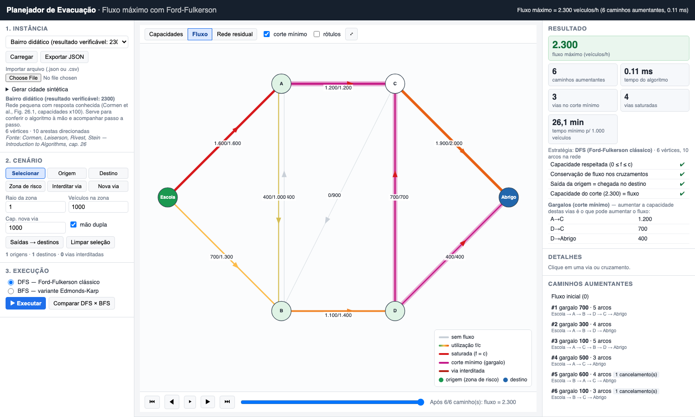
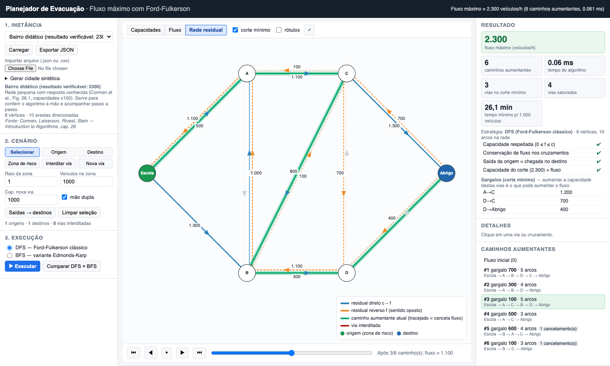
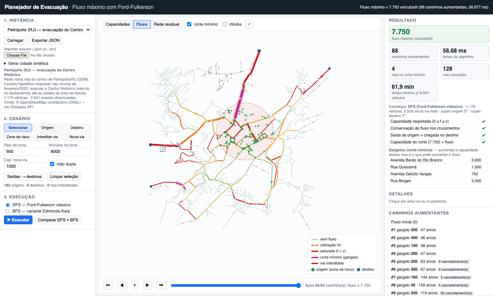
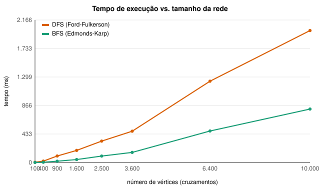
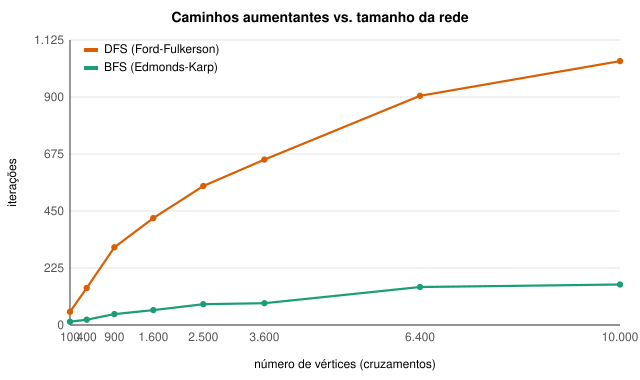
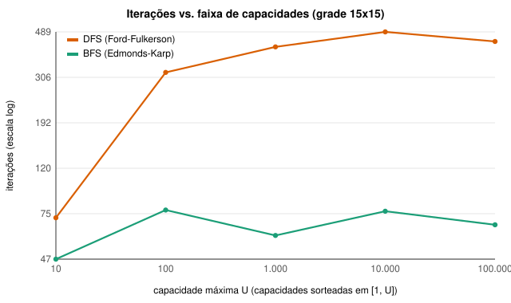
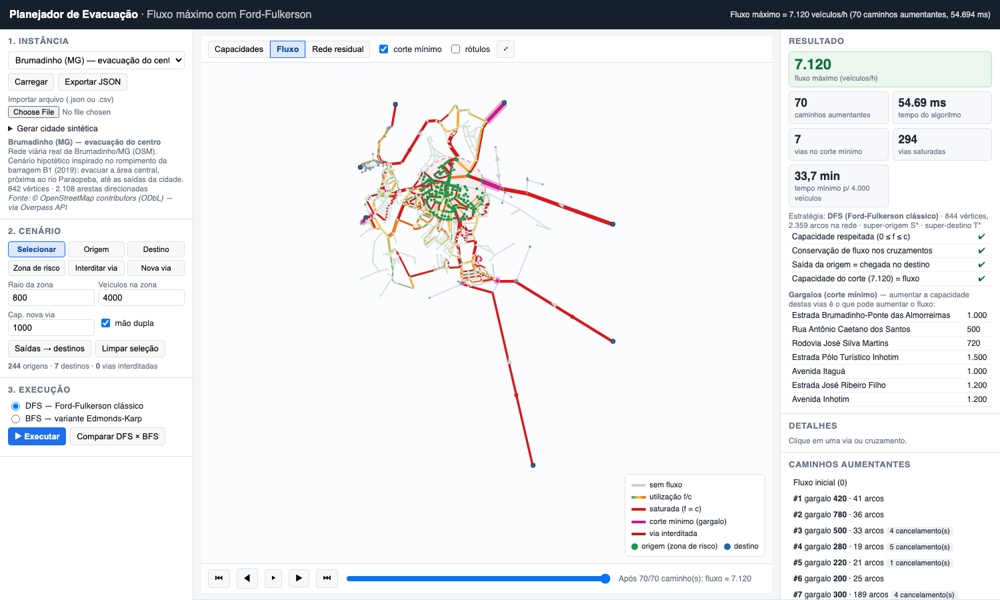

Centro Universitário Sagrado Coração (UNISAGRADO)
Ciência da Computação — Teoria dos Grafos
Prof. Patrick Pedreira
Tema 7 — Fluxo em Grafos (algoritmo de Ford-Fulkerson)
Integrantes
Pedro Henrique Teixeira Moroni — RA 23110956
Jonathans David da Silva P Jr — RA 23110246
Guilherme de Oliveira Lazari — RA 23110982
Lucas Soares de Almeida — RA 23210133
Repositório: https://github.com/tathans-js/fluxo-evacuacao
Bauru/SP, novembro de 2026
Projeto: Planejador de Evacuação Urbana por Fluxo Máximo. Tema: 7, Fluxo em Grafos. Algoritmo obrigatório: Ford-Fulkerson. Integrantes: Pedro Henrique Teixeira Moroni (RA 23110956); Jonathans David da Silva P Jr (RA 23110246); Guilherme de Oliveira Lazari (RA 23110982); Lucas Soares de Almeida (RA 23210133). Instituição: UNISAGRADO, Bauru/SP, Ciência da Computação. Professor: Patrick Pedreira.
A aplicação é web e roda localmente: o servidor e o algoritmo são em Python, a interface em HTML/JavaScript. Ela calcula o fluxo máximo de veículos que conseguem sair de uma zona de risco pela malha viária real de uma cidade e mostra o fluxo em cada rua, os caminhos aumentantes, a rede residual e o corte mínimo (os gargalos).
O Brasil teve vários desastres recentes em que foi preciso evacuar áreas urbanas às pressas. Em Brumadinho (MG), o rompimento da barragem B1 da mina Córrego do Feijão em janeiro de 2019 deixou 272 mortos. Em Petrópolis (RJ), as chuvas de fevereiro de 2022 provocaram enchentes e deslizamentos com mais de 230 mortos. Nos dois casos a capacidade da malha viária de tirar as pessoas da área atingida é um fator crítico. Cidades de serra ou de vale costumam ter poucas saídas e muitas ruas estreitas e de mão única.
A pergunta que o projeto responde é: dada uma zona de risco e os pontos seguros, qual é o maior número de veículos por hora que a rede viária consegue escoar, e quais ruas limitam esse valor? Esse é exatamente o problema do fluxo máximo. O resultado é útil no planejamento de três formas:
O problema não dá para resolver à mão nas instâncias reais. A rede de Petrópolis tem 1174 cruzamentos, 2341 arcos, 182 origens e 6 saídas, e a solução precisou de 88 caminhos aumentantes com até 159 arcos cada.
A malha viária foi baixada do OpenStreetMap (OSM) pela Overpass API em 04/11/2026
(scripts/baixar_osm.py). A consulta pega todas as vias com tag highway das classes
motorway, trunk, primary, secondary, tertiary, unclassified, residential e living_street (e as alças
_link), dentro de um retângulo em volta de cada cidade. Os arquivos brutos estão em data/raw/.
Os dados são © colaboradores do OpenStreetMap, sob licença ODbL.
| Cidade | Nós OSM | Vias OSM | Vértices (após conversão) | Arcos | Origens | Saídas |
|---|---|---|---|---|---|---|
| Brumadinho/MG | 3806 | 590 | 842 | 2108 | 244 | 7 |
| Petrópolis/RJ (centro) | 9167 | 871 | 1174 | 2341 | 182 | 6 |
As tags usadas são highway (tipo), lanes (faixas), oneway (mão única),
surface (pavimento) e name/ref (nome). Essas tags são incompletas no OSM: em
Brumadinho só 5 de 590 vias têm lanes. Por isso usamos valores padrão por tipo de via (seção 4).
A rede é real, mas a zona de risco e o número de veículos são hipóteses nossas, inspiradas nos desastres citados. Não são dados oficiais da Defesa Civil:
| Instância | Zona de risco (centro, raio) | Veículos | Destinos |
|---|---|---|---|
| Brumadinho | −20,1430; −44,2000; 800 m (centro, próximo ao rio Paraopeba) | 4000 | 7 saídas da área |
| Petrópolis | −22,5070; −43,1790; 900 m (Centro Histórico, vale do rio Quitandinha) | 8000 | 6 saídas da área |
Na interface, a zona pode ser movida (modo Zona de risco), e as origens e destinos podem ser escolhidos à mão, por exemplo para usar escolas ou ginásios como abrigos no lugar das saídas.
fluxo/gerador.py): grade com avenidas a cada 5 quadras, ruas locais
com 30% de mão única em sentido aleatório e 8% das ruas removidas. Com a mesma semente a cidade gerada é
sempre a mesma. Usamos de 10×10 até 100×100 cruzamentos (10 000 vértices, 32 768 arcos).| Elemento | Significado |
|---|---|
| Vértice | Cruzamento (nó OSM compartilhado por 2 ou mais vias), extremidade de via ou ponto onde uma via principal sai da área de estudo (marcado como saída). |
| Aresta (arco) | Trecho de rua entre dois vértices consecutivos de uma mesma via. Os nós intermediários do OSM (que só servem para desenhar a curva da rua) são contraídos. |
| Direção | Direcionado. Mão dupla vira dois arcos opostos e mão única vira um arco
(oneway=-1 inverte o sentido). |
| Ponderação | Ponderado pela capacidade c(u,v) em veículos/hora naquele sentido (inteiro). O comprimento do trecho é guardado só como informação. |
| Origem / destino | Vários: os cruzamentos dentro da zona de risco e as saídas/abrigos. Eles são ligados a uma super-origem S* e a um super-destino T* por arcos de capacidade "infinita" (soma de todas as capacidades + 1). |
Capacidade. c = faixas_no_sentido × capacidade_por_faixa(tipo) × fator_pavimento. Quando não
existe a tag lanes, a via de mão dupla fica com 1 faixa por sentido (vias expressas, 2) e a de mão
única com 1 faixa. Alças (_link) recebem 80% do valor da classe.
| Tipo (OSM) | veíc/h/faixa | Tipo (OSM) | veíc/h/faixa | Pavimento | Fator |
|---|---|---|---|---|---|
| motorway | 2000 | tertiary | 1000 | asfalto/sem tag | 1,0 |
| trunk | 1800 | unclassified | 700 | paralelepípedo | 0,75–0,8 |
| primary | 1500 | residential | 500 | cascalho/não pavimentado | 0,6 |
| secondary | 1200 | living_street | 250 | terra | 0,5 |
Esses valores são uma simplificação. O Highway Capacity Manual indica cerca de 1900 veíc/h/faixa em condição ideal, mas vias urbanas com semáforos, conversões e pedestres operam bem abaixo disso. Por isso as classes locais têm valores menores.
Hipóteses adotadas: (i) regime permanente: o fluxo é uma taxa (veíc/h) e não modelamos o tempo de percurso nem as filas; (ii) a capacidade de um trecho não depende do fluxo nas ruas vizinhas (cruzamentos não são gargalos à parte); (iii) os veículos podem seguir qualquer rota (evacuação coordenada); (iv) os destinos têm capacidade de recepção ilimitada. Por causa de (i)–(iii), o tempo N/F é uma cota inferior do tempo real de evacuação.
Uma rede de fluxo é um grafo dirigido G=(V,E) com capacidade c(e) ≥ 0, uma origem s e um destino t. Um fluxo f respeita (a) capacidade: 0 ≤ f(e) ≤ c(e); e (b) conservação: em todo vértice diferente de s e t, o que entra é igual ao que sai. O valor |f| é o fluxo líquido que sai de s.
A rede residual Gf tem, para cada aresta (u,v), um arco direto u→v com capacidade residual c(u,v) − f(u,v) (quanto ainda dá para mandar) e um arco reverso v→u com capacidade f(u,v) (quanto dá para "desfazer"). Um caminho aumentante é um caminho de s a t em Gf com todos os arcos de residual positivo. O arco reverso é o que permite ao algoritmo corrigir escolhas ruins feitas antes.
FORD-FULKERSON(G, s, t):
f(e) ← 0 para toda aresta e
enquanto existir caminho aumentante p de s a t em G_f:
g ← min{ c_f(a) : a ∈ p } ▹ gargalo
para cada arco a ∈ p:
f(a) ← f(a) + g ▹ aumenta no sentido do caminho
f(reverso(a)) ← f(reverso(a)) − g ▹ mantém a antissimetria
retorne f
Correção. Pelo teorema do fluxo máximo/corte mínimo, são equivalentes: (1) f é máximo; (2) não há caminho aumentante em Gf; (3) |f| = c(S,T) para algum corte (S,T). Quando o laço termina, tomamos S = vértices alcançáveis de s em Gf. Todo arco que sai de S está saturado e todo arco que entra em S tem fluxo zero, então |f| = c(S,T). Isso prova que o fluxo é máximo e que (S,T) é um corte mínimo. O programa calcula esse corte e confere a igualdade em toda execução.
Terminação. Com capacidades inteiras, cada aumento soma pelo menos 1 ao fluxo, que é limitado por c({s}, V−{s}). Por isso exigimos capacidades inteiras (veíc/h), e a validação rejeita valores não inteiros. Com capacidades irracionais o método pode não terminar.
O método não diz como achar o caminho. Implementamos duas formas:
| Estratégia | Busca | Complexidade | Comentário |
|---|---|---|---|
| DFS (padrão) | Profundidade, iterativa | O(E·|f*|) | Ford-Fulkerson "clássico". O número de iterações depende do valor do fluxo, ou seja, das capacidades. |
| BFS | Largura | O(V·E²) | Edmonds-Karp: sempre o caminho com menos arcos. O limite de iterações (O(V·E)) não depende das capacidades. |
Cada busca custa O(V+E). A DFS foi feita de forma iterativa, com pilha explícita, porque os caminhos nas redes reais chegam a 159 arcos e a recursão do Python tem limite de 1000 chamadas, que seria estourado nas grades de 100×100. Escolhemos a DFS como padrão por ser a versão original do método. A BFS entra para comparar o efeito da escolha do caminho (seção 8.3).
Uma evacuação tem muitas origens e muitos destinos. Criamos a super-origem S* com arcos S*→o de capacidade "infinita" para cada origem o, e o super-destino T* com arcos d→T*. O fluxo máximo de S* a T* é igual ao maior fluxo total das origens para os destinos. Quando há uma única origem ou um único destino, o vértice auxiliar correspondente não é criado.
| Módulo | Responsabilidade |
|---|---|
fluxo/rede.py | Estrutura RedeFluxo: lista de adjacência com arcos em vetores paralelos. A aresta
k gera o arco direto 2k e o reverso 2k+1, então o reverso de a é a ^ 1, em O(1). |
fluxo/ford_fulkerson.py | Algoritmo principal: ford_fulkerson(),
caminho_aumentante_dfs(), caminho_aumentante_bfs(), calcular_corte_minimo() e
verificar_fluxo(). |
fluxo/instancias.py | Formato JSON/CSV, validação, montagem da rede com S*/T*, execução e serialização do resultado. |
fluxo/osm.py | Conversão dos dados OSM: recorte da área, contração dos nós de grau 2, capacidades, maior componente conexa. |
fluxo/gerador.py | Gerador de cidades sintéticas reprodutíveis. |
fluxo/servidor.py, app.py | Servidor HTTP (biblioteca padrão) com API JSON: /api/instancias, /api/executar,
/api/comparar, /api/gerar, /api/importar. |
web/ | Interface em JavaScript puro: desenho em <canvas> com zoom/arrasto, edição do cenário,
passo a passo dos caminhos e visões de capacidade, fluxo e rede residual. |
Decisões de implementação. (1) Nenhuma biblioteca de grafos e nenhuma dependência externa: o
projeto roda com python3 app.py, sem instalar nada e sem internet, o que diminui o risco na
apresentação. (2) O algoritmo roda no servidor em Python, e a interface só desenha. Ela recebe a lista de
caminhos aumentantes (arcos, sentido e gargalo) e reconstrói o fluxo em qualquer passo k somando os k
primeiros caminhos. Assim o passo a passo não precisa executar o algoritmo de novo. (3) Para a rede residual,
cada rua mostra o residual direto c−f (azul, no sentido da rua) e o reverso f (laranja tracejado, no sentido
oposto). (4) Ruas de mão dupla são desenhadas com um deslocamento lateral para que os dois sentidos apareçam.



Os testes automatizados ficam em tests/test_ford_fulkerson.py (28 testes, unittest) e rodam em cerca
de 1 s com python3 -m unittest discover -s tests -v. Eles cobrem:
| Categoria | Casos |
|---|---|
| Resultado verificável | Rede do Cormen (2300) nas duas estratégias; aresta única; gargalo em série; arestas paralelas que se somam; caso em que o fluxo máximo (20) só é atingido cancelando fluxo por um arco reverso. |
| Sem solução | Ilha com ponte interditada (0) e, sem a interdição, 1200; destino alcançável só no sentido contrário (mão única); capacidade zero. |
| Fronteira / entrada inválida | Origem = destino; sem origem; capacidade negativa ou fracionária; vértice inexistente; laço; aresta entrando na origem; capacidades da ordem de 10¹²; JSON e CSV malformados; tentativa de ler arquivo fora da pasta pela API. |
| Validação independente | 200 grafos aleatórios (2 a 8 vértices): o fluxo do FF é comparado ao corte mínimo por força bruta (todas as 2n−2 partições). Em todos os casos também conferimos capacidade, conservação e valor. |
| Instâncias reais | Em todas as instâncias: DFS e BFS dão o mesmo valor e as 4 verificações passam. Interditar a via de maior capacidade do corte reduz o fluxo em no máximo a capacidade dela. |
| Múltiplas origens | S*/T* automáticos dão o mesmo resultado que a super-origem montada à mão. |
| Entradas e API | CSV com mão dupla, gerador reprodutível, tabela de capacidades OSM, requisições HTTP. |
Além disso, toda execução na interface mostra a verificação da solução: capacidade respeitada,
conservação em todos os cruzamentos, saída de S igual à chegada em T e capacidade do corte igual ao fluxo.
Os experimentos de desempenho (scripts/benchmark.py) usam a mediana de 3 execuções, num MacBook com
Python 3.9.
| Instância | V | E | Fluxo máx. (veíc/h) | Iter. DFS | Iter. BFS | ms DFS | ms BFS | Vias no corte | Tempo mín. evac. |
|---|---|---|---|---|---|---|---|---|---|
| Bairro didático | 6 | 10 | 2300 | 6 | 3 | 0,04 | 0,02 | 3 | 26,1 min (1000 v.) |
| Ilha sem caminho | 6 | 7 | 0 | 0 | 0 | 0,00 | 0,00 | 0 | ∞ (sem rota) |
| Brumadinho | 842 | 2108 | 7120 | 70 | 16 | 35,8 | 6,8 | 7 | 33,7 min (4000 v.) |
| Petrópolis | 1174 | 2341 | 7750 | 88 | 8 | 43,5 | 3,8 | 4 | 61,9 min (8000 v.) |
| Sintética 40×40 | 1600 | 5182 | 48800 | 433 | 60 | 163,7 | 43,5 | 47 | 14,8 min (12000 v.) |
Brumadinho. O gargalo são 7 vias de saída: Estrada Pólo Turístico Inhotim (1500), Estrada José Ribeiro Filho (1200), Avenida Inhotim (1200), Avenida Itaguá (1000), Estrada Brumadinho–Ponte das Almorreimas (1000), Rodovia José Silva Martins (720, não pavimentada) e Rua Antônio Caetano dos Santos (500). A soma dá 7120, igual ao fluxo. Ou seja, o limite não está dentro do centro, e sim nas poucas estradas que saem da cidade.
Petrópolis. O corte tem só 4 vias: Av. Barão do Rio Branco (3000), Rua Bingen (3000), Rua Quissamã (1000) e Av. Getúlio Vargas (750). Com 8000 veículos, a evacuação levaria no mínimo cerca de 1 hora, o que mostra como a geografia de vale restringe as rotas.
| Cenário | Brumadinho | Petrópolis |
|---|---|---|
| Base | 7120 veíc/h — 33,7 min | 7750 veíc/h — 61,9 min |
| Interditar a maior via do corte | 5620 (Estr. Inhotim) — 42,7 min | 4750 (Av. Barão do Rio Branco) — 101,1 min |
| Contrafluxo nas vias do corte | 8120 — 29,6 min (+14%) | 7750 — sem ganho |
Em Petrópolis, perder a Av. Barão do Rio Branco aumenta o tempo mínimo em 63%. O contrafluxo (usar também a faixa do sentido oposto) ajuda em Brumadinho. Em Petrópolis não muda nada. As duas vias principais do corte (Av. Barão do Rio Branco e Rua Bingen) já são de mão única no sentido da saída, então não há faixa oposta para inverter. Nas outras duas, ganhar capacidade só faz aparecer outro corte com a mesma capacidade (7750) logo à frente. Nesse caso, só criar ou liberar outras rotas aumentaria a vazão. Esse tipo de conclusão é o que o corte mínimo dá ao planejador.
| Grade | V | E | Fluxo | Iter. DFS | Iter. BFS | ms DFS | ms BFS |
|---|---|---|---|---|---|---|---|
| 10×10 | 100 | 305 | 14100 | 52 | 13 | 3,6 | 0,7 |
| 20×20 | 400 | 1231 | 18100 | 146 | 21 | 21,2 | 3,9 |
| 30×30 | 900 | 2848 | 37800 | 307 | 43 | 98,5 | 20,0 |
| 40×40 | 1600 | 5116 | 47800 | 422 | 59 | 183,6 | 44,5 |
| 50×50 | 2500 | 8061 | 61400 | 549 | 82 | 325,5 | 98,3 |
| 60×60 | 3600 | 11696 | 70500 | 653 | 86 | 475,8 | 153,4 |
| 80×80 | 6400 | 20921 | 98200 | 905 | 150 | 1236,0 | 478,7 |
| 100×100 | 10000 | 32768 | 112800 | 1042 | 160 | 2005,4 | 812,5 |


O tempo cresce de forma superlinear: 100 vezes mais vértices custam cerca de 550 vezes mais tempo na DFS. Isso bate com o custo de cada iteração (O(V+E)) multiplicado pelo número de iterações, que também cresce com a rede. A DFS fez de 4 a 11 vezes mais iterações que a BFS. Os caminhos da DFS são longos e "tortos" (média de 119 arcos em Petrópolis contra 20 da BFS) e terminam em gargalos pequenos (o menor foi de 10 veíc/h). A BFS acha caminhos curtos que saturam ruas inteiras de uma vez. Mesmo assim, a maior instância testada (10 000 cruzamentos) foi resolvida em 2 s com DFS e 0,8 s com BFS, o que é rápido o bastante para uso interativo.

Na Figura 6 o grafo é fixo e só muda a faixa das capacidades. A DFS foi de 72 iterações (U = 10) para 420–490 iterações a partir de U = 1000. A BFS ficou entre 47 e 78. Isso ilustra a diferença entre O(E·|f*|), que depende das capacidades, e O(V·E²), que não depende. No pior caso teórico (o exemplo clássico com um arco de capacidade 1 entre dois caminhos de capacidade C), a DFS pode precisar de 2C iterações. Nas redes viárias isso não aconteceu, porque as capacidades são múltiplos de poucos valores (250, 500, 1000...).

lanes), e a tabela de
capacidades é simplificada. Ela não considera declividade (importante em Petrópolis), semáforos, largura real
nem estado da via. Contagens de tráfego da prefeitura ou do DNIT dariam valores melhores.| Integrante | Contribuições |
|---|---|
| Pedro Henrique Teixeira Moroni | implementação do algoritmo (ford_fulkerson.py, rede.py) e testes automatizados |
| Jonathans David da Silva P Jr | coleta e conversão dos dados do OpenStreetMap (osm.py, scripts), tabela de capacidades e experimentos de desempenho |
| Guilherme de Oliveira Lazari | interface web (web/): desenho da rede, passo a passo, rede residual e edição do cenário |
| Lucas Soares de Almeida | servidor e formato das instâncias, gerador sintético, importação JSON/CSV, relatório e slides |
Como o enunciado permite, usamos uma ferramenta de IA generativa (Claude, da Anthropic) como apoio para gerar partes do código (principalmente a interface e os scripts auxiliares), sugerir casos de teste e revisar o texto deste relatório. O grupo revisou todo o material gerado, executou e validou os resultados (testes automatizados, comparação com força bruta e com o exemplo conhecido do Cormen) e conseguiu explicar cada módulo. As escolhas de modelagem (problema, hipóteses, cenários e tabela de capacidades) foram discutidas e aprovadas pelo grupo.